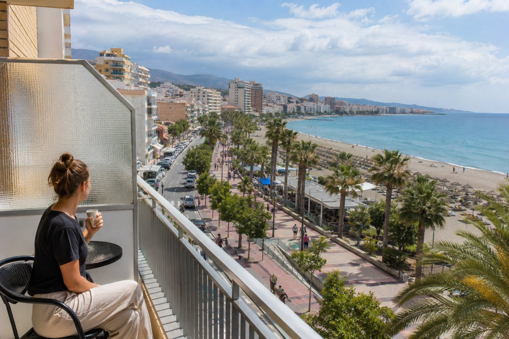

1
JPG klar
Hög prio · 192
Strand
torremolinos
Budget — Solo, 7 nätter
♻ 1 återanvändbara bilder — använd en av dessa i stället för att skapa ny:
bilder/web-ready/torremolinos/budget-solo-7-natter-torremolinos.jpg
bilder/web-ready/torremolinos/redo/budget-solo-7-natter-torremolinos.jpg
Prompt
Publishing metadata
- Prioritet
- Hög (192) · bas 10 | matchar sidtitel/H1 +80 | 5 träffar i H3-text +25 | 8 träffar i sidtext +16
- Alt
- Budget — Solo, 7 nätter i Torremolinos
- Caption
- Budget — Solo, 7 nätter i Torremolinos
- SEO
- Budget — Solo, 7 nätter i Torremolinos. En del av reseguiden om Torremolinos med naturligt folkliv och tydliga platsdetaljer.
- GPS
- 36.6218, -4.5003
- Target
- https://torremolinos.se/vad-kostar-torremolinos/ / budget-solo-7-natter